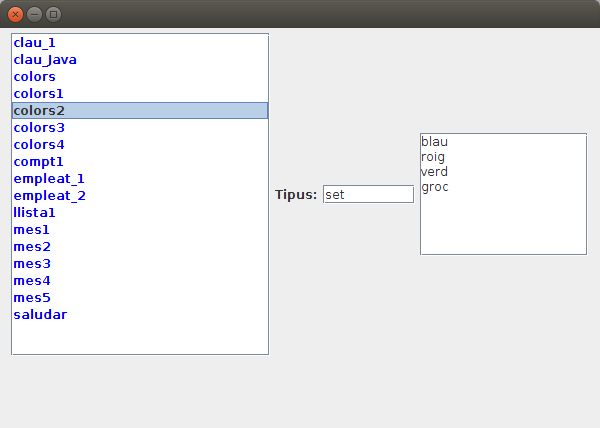

Exercicis
Exercici 8.1 (Redis)
En un nou paquet anomenat Exercicis dins del projecte Tema8_1, crea la fitxer Kotlin T8Ex1_ConsultarClaus.kt, que permeta consultar totes les claus guardades en el nostre servidor Redis.
Ha de presentar totes les claus actuals en Redis i el seu tipus, però amb un número davant. Posteriorment ha de demanar un número per teclat, i presentar la clau i el valor corresponent al número introduït, fins introduir el 0. Observa que depenent del tipus de la clau s'haurà de fer d'una manera o una altra. En la imatge teniu un exemple de cada:
1.- clau_1 (string)
2.- mes2 (string)
3.- empleat_1 (hash)
4.- mes1 (string)
5.- saludar (string)
6.- empleat_2 (hash)
7.- mes6 (string)
8.- mes5 (string)
9.- mes4 (string)
10.- mes3 (string)
11.- colors (set)
12.- mes7 (string)
13.- llista1 (list)
14.- clau_Java (string)
15.- lista111 (list)
16.- colors1 (set)
17.- colors2 (set)
18.- colors3 (set)
19.- text (string)
20.- colors4 (set)
21.- clau_4 (string)
22.- clau_2 (string)
23.- puntuacions (zset)
24.- compt3 (string)
25.- compt2 (string)
26.- compt1 (string)
27.- quatre (string)
28.- pi (string)
Introdueix un número (0 per a eixir)
4
mes1: gener
Introdueix un número (0 per a eixir)
6
empleat_2
sou --> 1500.0
nom --> Berta
Introdueix un número (0 per a eixir)
13
llista1
primera
sisena
cinquena
Introdueix un número (0 per a eixir)
11
colors
roig
verd
blau
Introdueix un número (0 per a eixir)
23
puntuacions
Nom5 --> 2.75
Nom2 --> 3.5
Nom3 --> 5.0
Introdueix un número (0 per a eixir)
0
Exercici 8.2 (Redis)
Realitzar en el mateix paquet un altre programa, aquesta vegada gràfic, que ens diga el mateix, però d'una forma més atractiva.
- El programa s'ha de dir T8Ex2_ConsultaClausGrafica.
- Contindrà un JList on han d'aparéixer totes les claus, millor si estan ordenades alfabèticament. Recordeu que el JList és un poc complicat, que es basa en un DefaultListModel, i és a aquest a qui heu d'afegir els elements.
- Al costat ha d'haver un JTextField que diga de quin tipus és quan se seleccione un element del JList
- I també un JTextArea amb el seu valor (siga del tipus que siga)
Aquest seria l'esquelet.
import javax.swing.JFrame
import javax.swing.JLabel
import javax.swing.JTextField
import javax.swing.JTextArea
import javax.swing.DefaultListModel
import javax.swing.JList
import javax.swing.JScrollPane
import java.awt.FlowLayout
import java.awt.Color
import redis.clients.jedis.Jedis
import java.awt.EventQueue
class EstadisticaRD : JFrame() {
val etTipClau= JLabel("Tipus:")
val tipClau= JTextField(8)
val contClau = JTextArea(8,15)
val con = Jedis("localhost")
val listModel = DefaultListModel<String>()
val llClaus = JList(listModel)
init {
defaultCloseOperation = JFrame.EXIT_ON_CLOSE
setBounds(100, 100, 450, 450)
setLayout(FlowLayout())
llClaus.setForeground(Color.blue)
val scroll = JScrollPane(llClaus)
llClaus.setVisibleRowCount(20)
val scroll2 = JScrollPane(contClau)
add(scroll)
add(etTipClau)
add(tipClau)
add(scroll2)
setSize(600, 400)
setVisible(true)
inicialitzar()
llClaus.addListSelectionListener{valorCanviat()}
}
fun inicialitzar(){
}
fun valorCanviat() {
}
}
fun main(args: Array<String>) {
EventQueue.invokeLater {
EstadisticaRD().isVisible = true
}
}I aquest el seu aspecte

Exercici 8.3 (Redis) (voluntari)
Realitzar un programa anomenat T8Ex3_JocEndevinaNumero.kt, que faça el joc d'endevinar un número del 1 al 100. Cada vegada que el jugador pose un número el programa ha de dir si el número a endevinar és major o menor que l'introduït, fins que es trobe.
Posteriorment pregunta el nom i guarda'l amb la marca en un conjunt ordenat (Sorted Set) anomenat joc_marques, on utilitzarem com a valor el nom del jugador, i com a puntuació (score) que serveix per a ordenar, el temps. Com a complicació tindrem que en un conjunt ordenat (igual que en un conjunt) no es poden repetir els valors. Ha de ser de la següent manera:
- Medir el temps des de que comença la partida fins que es trobe el número. T'anirà bé la funció System.currentTimeMillis(), que dóna l'hora actual en milisegons. La diferència entre el primer moment i el segon, serà el número de milisegons que ha durat la partida.
- Primer guarda sense tenir en consideració que es puga repetir el nom del jugador.
- (Voluntari) Després millora'l, per a que si es posa un nom que ja existeix, li afegisca un número: nom, nom_1, nom_2, ...
- (Voluntari) Finalment, limita la llista de puntuacions a les 10 millors.
Exercici 8.4 (MongoDB)
Agafa l'estat actual de Bicicas de la següent adreça:
http://gestiona.bicicas.es/apps/apps.php
En compte de copiar aquestes dades actuals en un fitxer i després nalitzar el fitxer, analitzarem directament fent la petició a la pàgina del servidor d'aquesta manera:
val url = URL("http://gestiona.bicicas.es/apps/apps.php")
val rd = url.openConnection().getInputStream().reader()
L'objecte rd és un Reader que directament el podem passar com a paràmetre del JSONTokener, vist en el Tema 3.
Estudia el format JSON, per a poder agafar bé la informació de cada estació, tal i com vam veure en el Tema 3.
- Fes un programa anomenat T8Ex4_IntroduirBicicas (amb main) que introduesca en MongoDB cada estació com un document en una col·lecció anomenada bicicas.
- Fes un altre programa anomenat T8Ex4_MostrarBicicas que agafe tots els documents de la col·lecció bicicas de la Base de Dades de MongoDb, que són totes les estacions, i traga la seua informació amb aquest aspecte (en la imatge només es mostren les 10 primeres, però han d'eixir totes)
01.- UJI - FCHS (5/27)
02.- ESTACIóN DE FERROCARRIL Y AUTOBUSES (11/28)
03.- COLóN (9/16)
04.- PASEO BUENAVISTA-GRAO (4/13)
05.- HOSPITAL GENERAL (5/18)
06.- PLAZA DE LA LIBERTAD (0/12)
07.- PLAZA TEODORO IZQUIERDO (4/13)
08.- PLAZA PRIMER MOLÃ (6/13)
09.- PATRONAT DESPORTS (7/14)
10.- PLAZA DOCTOR MARAñóN (0/23)
Llicenciat sota la Llicència Creative Commons Reconeixement NoComercial SenseObraDerivada 4.0